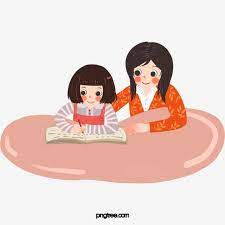
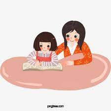

Mother’s love is the first and most important behaviour
It must be understood that, when we talk about mother’s love,
it doesn’t necessarily refers to humans but to animals as well.
NO LANGUAGE CAN EXPRESS THE POWER AND BEAUTY AND HEROISM OF A MOTHER'S LOVE.
"THE ONLY LOVE THAT I REALLY BELIEVE IS IN MOTHER'S LOVE FOR HER CHILDREN."